Machine-learning applications, engineering systems, and computational research, with source code, methods, and evaluation in each case study.
Featured projects below demonstrate implemented systems and evaluated computational studies. Ongoing PhysicsNeMo research is listed separately.
Project portfolio
17 projects
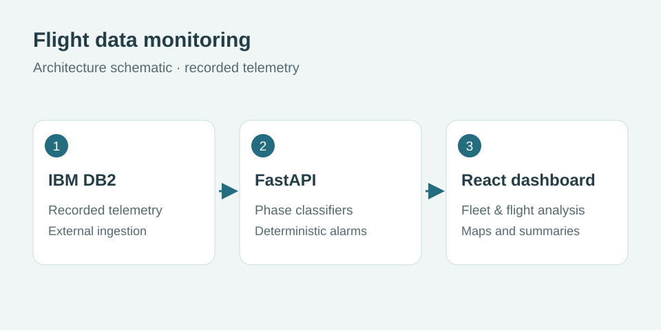
System schematicIndustry · Aviation analytics
Flight data monitoring dashboard
Helping analysts explore recorded flights and flight phases.
Built a FastAPI / IBM DB2 / React dashboard with Docker packaging, flight-phase predictions, engineering analytics, and deterministic safety alarms.
Read case study →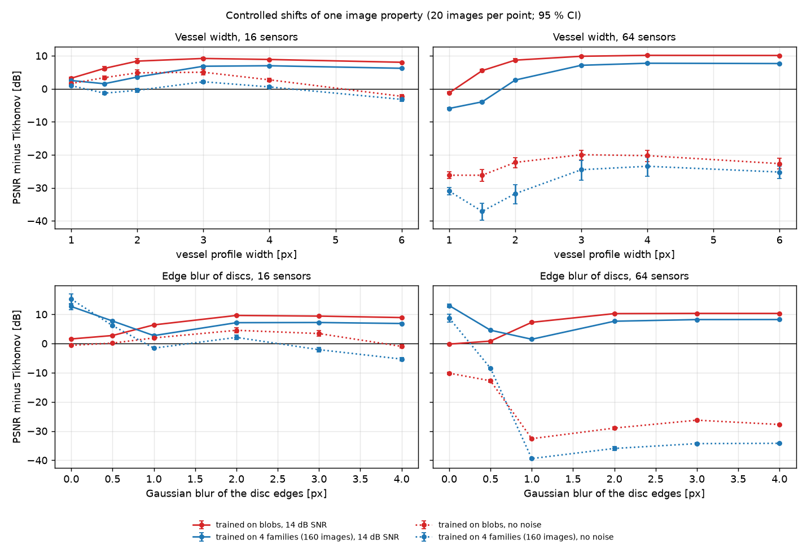
Controlled shifts · 20 images per pointInverse problems · Imaging
Sparse-view photoacoustic reconstruction
Improving sparse-view image reconstruction with learned and model-based methods.
Synthetic sparse-view imaging: U-Net refinement improved PSNR over calibrated time reversal by 4.9 dB at 16 sensors and 3.2 dB at 64 sensors across 400 held-out images and five networks.
Read case study →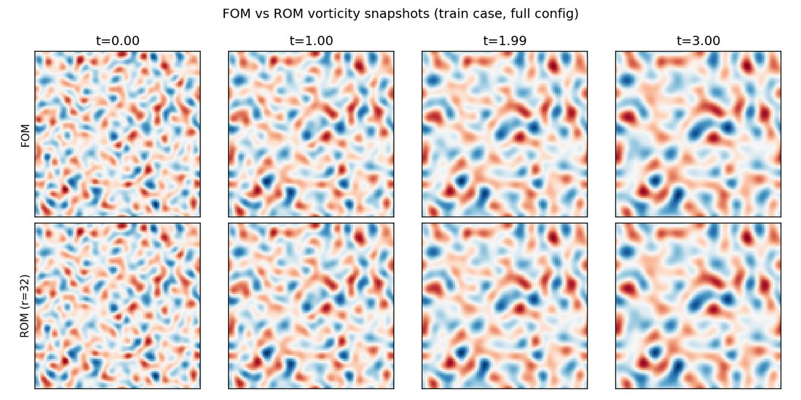
Research figure · open case study for contextCFD · Reduced-order modelling
Navier–Stokes & reduced-order modelling
Accelerating repeated simulations of incompressible flow.
Verified spectral flow solver and tensor reduced model: 38.5× online speed-up at <0.1% mean state error on the training trajectory (rank 16).
Read case study → Research figure · open case study for context
Research figure · open case study for contextScientific ML · Model reduction
Reduced models & neural operators
Comparing fast approximations of nonlinear transport.
Compared classical and learned PDE surrogates: POD achieved 0.152% relative L² error versus 0.90% for FNO on 40 in-distribution cases (five FNO seeds).
Read case study → Research figure · open case study for context
Research figure · open case study for contextDynamical systems · Uncertainty
Data assimilation for chaotic Lorenz-96
Estimating chaotic system states from noisy observations.
In a 10-seed study with a selected localisation radius, reduced state-estimation RMSE from 4.63 to 0.41 using Ensemble Kalman filtering.
Read case study → Research figure · open case study for context
Research figure · open case study for contextM.Sc. thesis · Applied mathematics
Optimal mixing of passive scalars
Reproducible pseudo-spectral study of optimal passive-scalar mixing.
Extended M.Sc. thesis computations to N=512 with 48 verification tests; established approximately second-order convergence of fixed-window exponent fits.
Read case study → Research figure · open case study for context
Research figure · open case study for contextCFD · Finite elements
Finite-element cylinder-flow benchmarks
Measuring solver accuracy on standard cylinder-flow problems.
Taylor–Hood finite-element solver verified at O(h³)/O(h²) velocity convergence, with steady cylinder-flow results closely matching the published reference.
Read case study →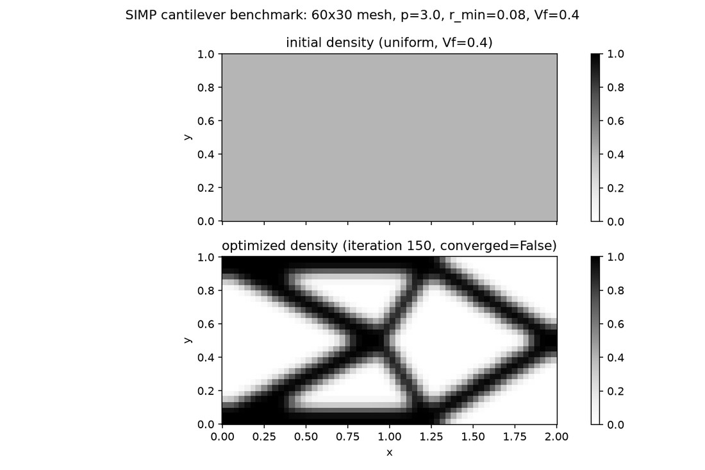
Research figure · open case study for contextFinite elements · Optimisation
Topology optimisation with verified FEM
Finding material layouts that resist loading with less material.
Verified elasticity and optimisation sensitivities; reduced canonical cantilever compliance from 617.9 to 101.4 after 150 iterations.
Read case study →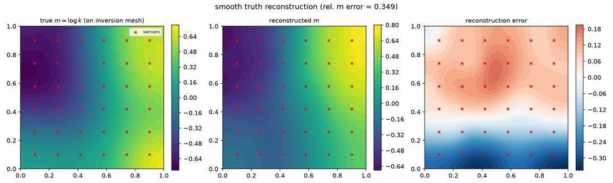
Research figure · open case study for contextInverse problems · Uncertainty
Bayesian Darcy permeability inversion
Recovering underground permeability from pressure observations.
Adjoint-based permeability inversion with gradient verification and Bayesian sampling checked against a linear-Gaussian reference (0.59% posterior-mean error).
Read case study →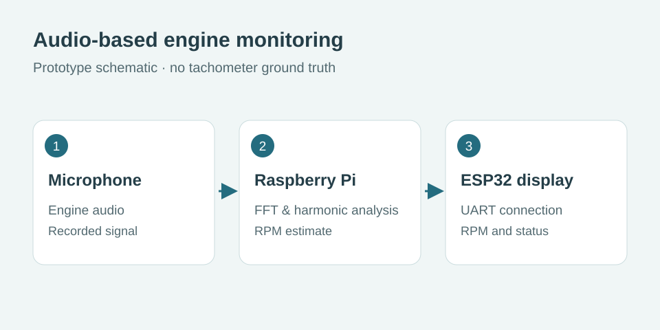
System schematicIndustry · Signal processing
Aircraft engine audio monitoring
Estimating engine behaviour from audio recordings.
Developed audio-based RPM processing on Raspberry Pi with UART transmission to an ESP32; evaluated on Tecnam P92 / Rotax 912 recordings at Intuos.
Read case study →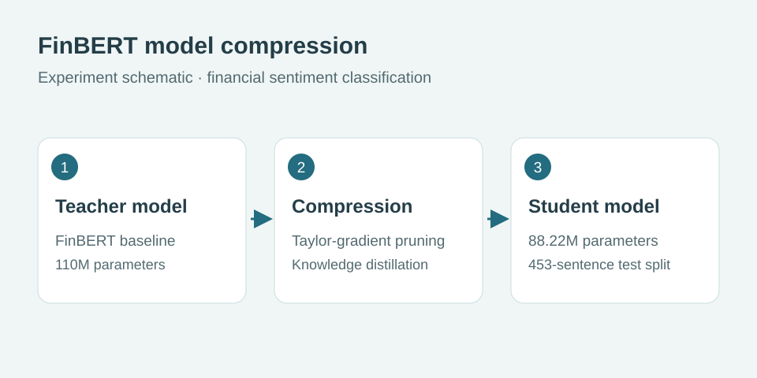
Compression experiment schematicApplied ML · Generative AI
LLM systems & model compression
Building and evaluating practical language-model systems.
Implemented RAG and NL-to-SQL pipelines and FinBERT compression from 110M to 88M parameters through layer removal and knowledge distillation.
Read case study →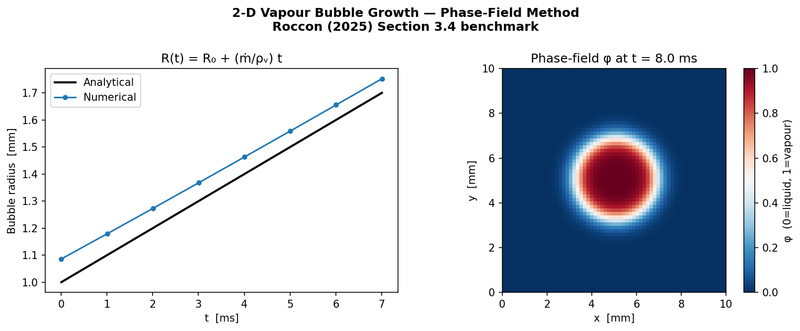
Research figure · open case study for contextCFD · Phase change
Phase-field boiling & multiphase flow
Simulating coupled flow, heat transfer, and phase change.
Coupled phase-field, flow, and heat-transfer solver with a dedicated 1D Stefan benchmark reaching 0.079% interface-position error.
Read case study → Historical value-only formulation · seed 42
Historical value-only formulation · seed 42Scientific ML · Numerical PDEs
Physics-informed advection–diffusion
Solving transport equations using physics-based training losses.
Controlled five-seed CPU and CUDA study of physics-informed training, separating boundary-condition accuracy from global solution error.
Read case study →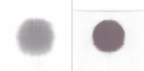
Novel-view rendering comparisonNeural rendering
NeRF & TensoRF from scratch
Synthesising new views of a scene from posed images.
On a synthetic sphere scene: TensoRF 16.7 dB test PSNR versus 13.7 dB for NeRF (one seed, unmatched budgets).
Read case study →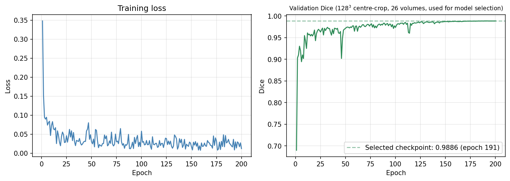
Training and model-selection curvesMedical imaging
3D liver segmentation
Segmenting liver anatomy in volumetric CT images.
Implemented a 3D U-Net training and sliding-window inference pipeline for abdominal CT liver segmentation.
Read case study → Research figure · open case study for context
Research figure · open case study for contextInverse rendering
Differentiable material optimisation
Testing which surface-material properties multi-view renderings can identify.
Implemented a differentiable PyTorch renderer, verified gradients with finite differences, and studied material identifiability under controlled view and lighting changes.
Read case study →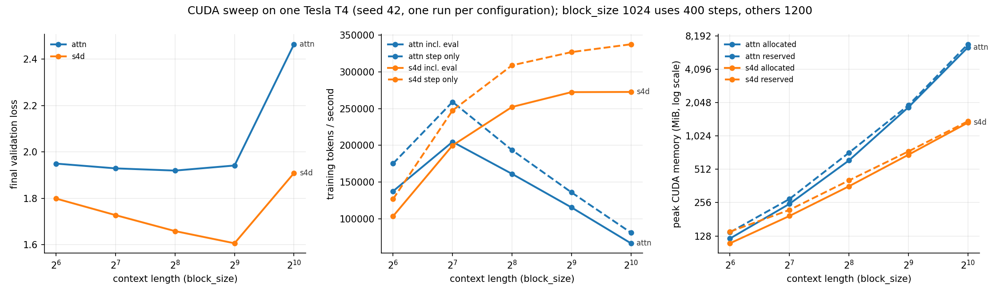
Tesla T4 sweep · one run per configurationSequence modelling · State-space models
State-space model vs. Transformer
Comparing two sequence architectures under matched training conditions.
S4D reached lower validation loss at every tested context length. On a Tesla T4 at context 1024 it trained at about 272k tokens/s against 67k for attention, with 1,349 against 6,455 MiB peak allocated memory (one seed, fixed training budget).
Read case study →NVIDIA PhysicsNeMo studies
Reproducibility and scientific extensions of neural PDE solvers, neural operators, graph networks and physics-informed learning. Each study takes an official PhysicsNeMo example, pinned to one upstream commit, and adds a controlled experiment, independent checks of the data or reference solution, and quantitative evaluation. These are recent studies; most have reduced laptop-scale results only, and the GPU studies at the upstream settings are still to run.
MeshGraphNet · Physics-informed fine-tuning
Stokes flow: data-driven surrogate before and after physics-informed fine-tuning
Preliminary resultsReduced local study · 2 test meshes
Does physics-informed fine-tuning improve PDE consistency and predictive accuracy?
On two test meshes, velocity relative L² error fell from 0.188 to 0.109, the momentum residual from 0.898 to 0.292 and the divergence residual from 0.610 to 0.063. Pressure error barely changed (0.159 to 0.154), and the independently measured boundary residual worsened (0.0033 to 0.0155), driven by the no-slip condition.
Limits: the data-driven baseline is deliberately undertrained (4,000 of 250,000 iterations), and only 2 of 10 configured test meshes were fine-tuned. Residuals at or below the reference discretisation floor cannot be ranked by this metric, so they do not show the prediction is more physical than the reference. The study at the NVIDIA settings is pending.
Repository ↗Fourier neural operator · Darcy flow
Fourier-mode capacity of an FNO surrogate
CUDA study pendingReduced 64 × 64 study complete (Apple MPS)
How does the number of retained Fourier modes affect accuracy and cost?
In the reduced study (three seeds), test error fell from 1.46% ± 0.15% with 4 modes to 0.92% ± 0.12% with 8, then did not improve with 12 or 16 modes while the parameter count grew fourfold. Checks against independent sparse direct solves showed that the benchmark's reference fields solve the generator's own stencil, not the conservative Darcy equation, so errors are against that discrete operator.
Limits: one 64 × 64 grid, 1,024 training samples and 960 optimiser steps, compared at a fixed budget and not at convergence. The 256 × 256 study at the upstream resolution and the upstream-behaviour control have not been run; no CUDA result exists yet.
Repository ↗Physics-informed neural operator · Darcy flow
Physics weighting in a physics-informed Darcy FNO
Preliminary resultsReduced local study · one seed
How does the weight of the PDE residual term change prediction error and residual?
A data check found that the forcing in the example's residual does not match the dataset. With the residual as shipped, raising the physics weight lowered that residual and raised the prediction error (0.052 at the default weight, 0.098 at weight 1, against 0.048 for data only). With a data-consistent residual, the residual fell ninefold at weight 0.1 with no resolved change in error.
Limits: 15 epochs and one seed, so run-to-run variation is unknown and differences of about 0.001 in error are not resolved. A lower mean residual than the reference solutions reflects smoothing near permeability changes, not better agreement with the reference. The three-seed study at the upstream budget has not been run.
Repository ↗Physics-informed neural network · Navier–Stokes
Reynolds-number study of the lid-driven-cavity PINN
Ongoing researchReduced study complete · study at upstream settings pending
How accurate is the example's training recipe, and how does that change with Reynolds number?
An independent finite-difference reference solver was verified against published cavity benchmarks. In the reduced study (Re = 10, 100, 400; three seeds; half the steps and a quarter of the points of the example), the velocity relative L² error was 0.46 at Re = 10 and 0.80 to 1.08 at Re = 100 and 400. One Re = 100 seed collapsed to a constant velocity field with zero PDE residual (error 1.61); it is kept in the results.
Limits: these numbers describe this architecture and training recipe under a reduced budget, not PINNs at high Reynolds number in general. Even at Re = 10 the reduced run is far from the reference. The three-seed study at the example's own settings has not been run.
Repository not yet public.
MeshGraphNet · Vortex shedding
Message-passing depth of MeshGraphNet for vortex shedding
Work in progressPipeline implemented · no results reported
How does message-passing depth affect one-step accuracy and error growth in long rollouts?
Implemented: training, autoregressive rollout and evaluation built on the upstream example, with tests, for 5, 10 and 15 message-passing steps and three seeds at a fixed training budget. Planned metrics are one-step error relative to the true increment, rollout error over 599 steps, a lag-minimised error that separates phase drift from wrong structure, and kinetic-energy drift.
Unverified: everything quantitative. The reduced study (0.4% of the upstream training budget) is not complete, and the single-GPU study and the run at the NVIDIA settings have not been started.
Repository not yet public.
Additional Technical Work
- Image Denoising (ResNet): Residual Channel Attention Blocks for greyscale denoising, trained on random noise levels; 33.71 dB PSNR / 0.918 SSIM at σ = 0.09 on 1,000 LFW images that also informed early stopping, so not a strictly held-out test.
- Vending Machine Failure Prediction: predictive ML on telemetry and transaction logs across roughly 150 machines.
- Prediction API: FastAPI + PostgreSQL model-serving deployment with Docker Compose, Terraform (AWS), and a CI/CD pipeline.
- Whole-Body Diffusion Generator: IP-Adapter FaceID and SDXL face-guided portrait generation on serverless GPU, a 2026 modernisation of the InsetGAN pipeline built during the Fellowship.AI internship.
- Image Inpainting (TV Regularisation): Douglas-Rachford optimisation for variational image restoration.
- Dipole Subsurface Scattering: differentiable dipole BSSRDF parameterised for all six Fitzpatrick skin types.
- nano-gpt: a GPT-style transformer language model built from scratch in PyTorch, trained character-level on Tiny Shakespeare.
- Roof Segmentation (U-Net): aerial image segmentation for rooftop detection from satellite imagery.
- Multi-Label Image Classification: EfficientNet-B3 on Pascal VOC 2012 with mixed-precision training and OneCycleLR scheduling.